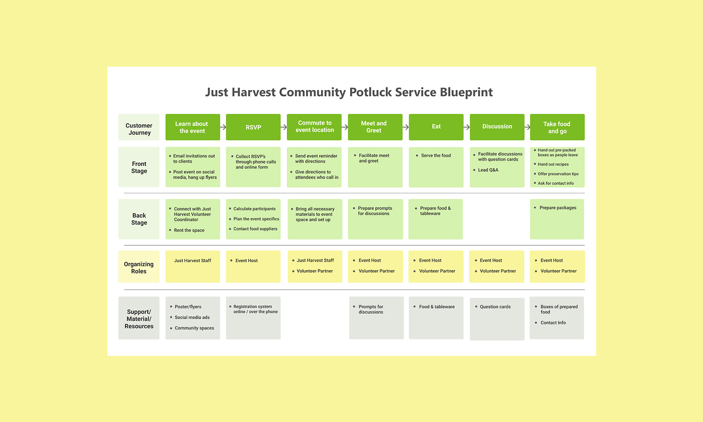
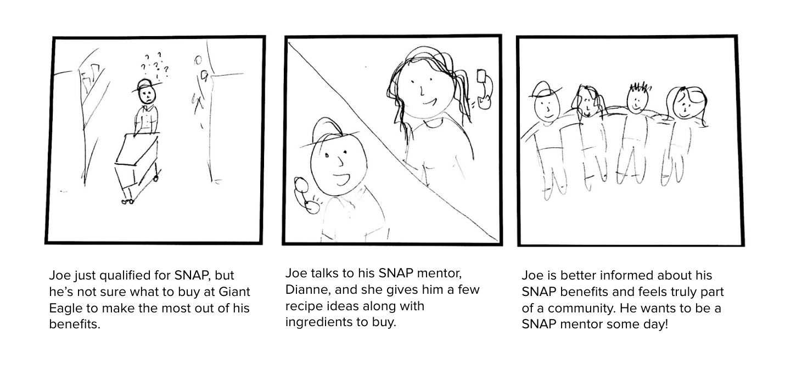
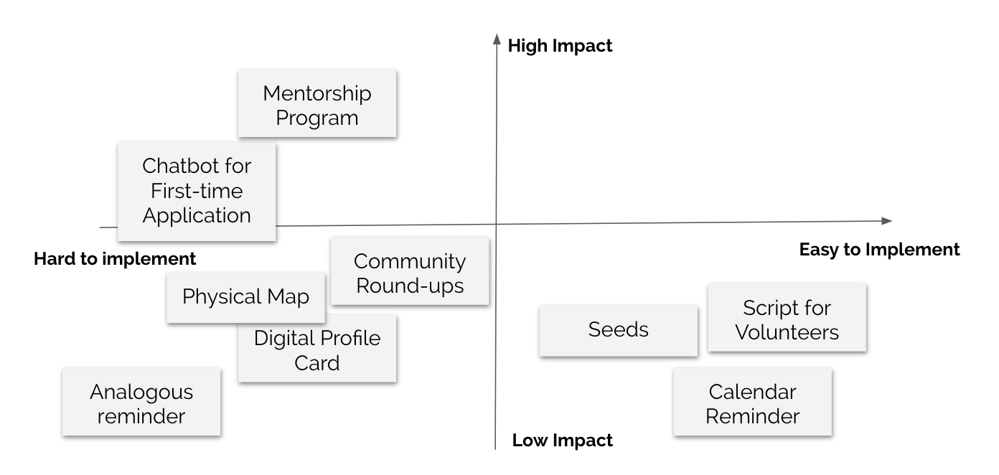
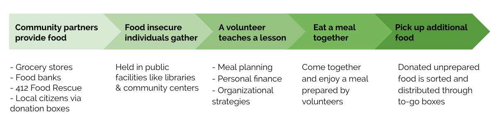
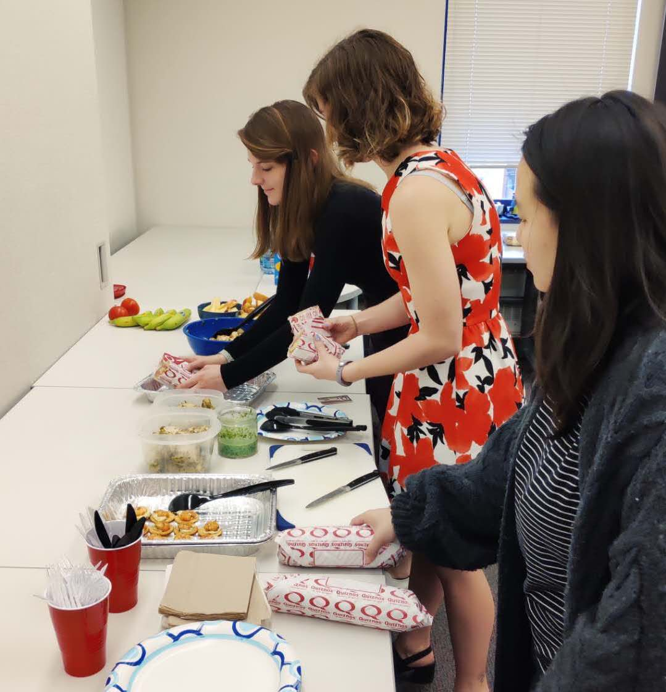
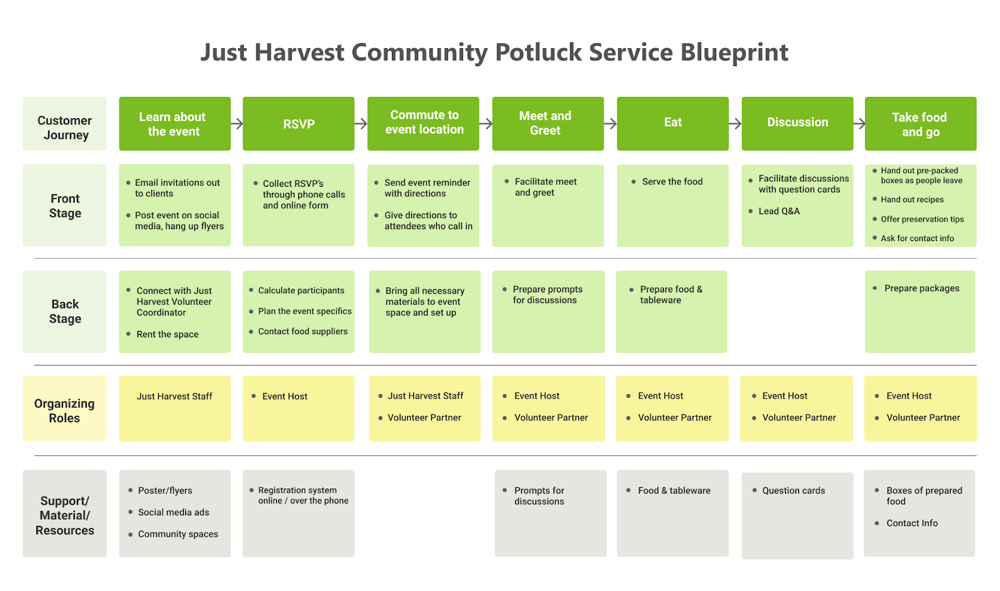
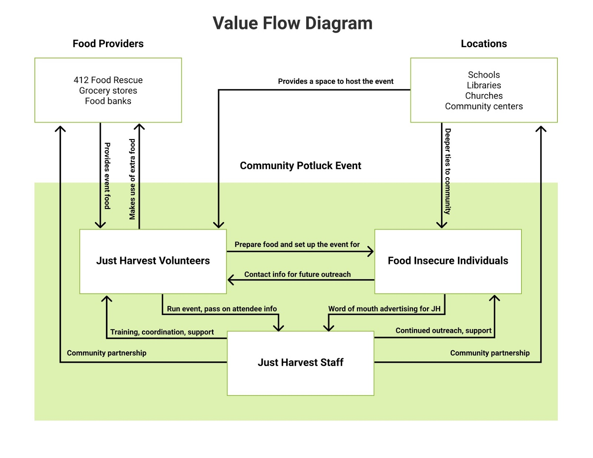

<!DOCTYPE html>
<html>

  <head>
    <title>Emily Porat | Just Harvest Community Table</title>
    <link rel="stylesheet" type="text/css" href="styles/global2.css">
    <link rel="stylesheet" type="text/css" href="styles/justharvest.css">
    <link rel="stylesheet" type="text/css" href="styles/nav.css">
    <link rel="stylesheet" type="text/css" href="styles/contact.css">
    <script src="https://ajax.googleapis.com/ajax/libs/jquery/1.9.1/jquery.min.js"></script>
    <link rel="shortcut icon" type="image/x-icon" href="pics/favicon.ico" />
    <link rel="stylesheet" href="https://cdnjs.cloudflare.com/ajax/libs/font-awesome/4.7.0/css/font-awesome.min.css">
    <!-- Global site tag (gtag.js) - Google Analytics -->
    <script async src="https://www.googletagmanager.com/gtag/js?id=UA-119412150-1"></script>
    <script>
      window.dataLayer = window.dataLayer || [];
      function gtag(){dataLayer.push(arguments);}
      gtag('js', new Date());

      gtag('config', 'UA-119412150-1');

      // load other reused files
      $(function() {
      	$('#nav').load('http://emilyporat.com/nav.html');
      	$('#footer').load('http://emilyporat.com/footer.html');
      });
    </script>
  </head>

  </html>
  <body>
    <meta name="viewport" content="width=device-width">
    <div id="nav"></div>
	
	
	  	<div class="page-title">Just Harvest Community Table</div>
	  	<div class="project-info">Spring 2019 | Service Design </div>
	  	

	  	<div id="justharvest" class="margin-medium">

	  	<div class="content"> 
			
			<div class="context-summary">
				<div class="context-title">Context</div> 
					<p>
					I worked on this project through Service Design, an elective class in the HCI program. In this class, we learned to define and study services and data-driven product service systems and the basics of envisioning and designing them. The class culminated in a final client project. We partnered with <a href="https://www.justharvest.org/">Just Harvest</a>, a local nonprofit that works to fight hunger in Allegheny County through advocacy, education, and community outreach.</p>
					<p>
					As a class, we were tasked with understanding the current social, economic, and technological factors surrounding access to government aid programs. Each team took a unique stance on developing a new services, app, or platform that leverages Just Harvest’s expertise in reducing food insecurity.
					</p>
			</div>
			
			<div class="context-specifics">
				<div class="context-subtitle">Team</div>
					<div class="context-description">
						I worked on a multi-disciplinary team of 5: the four other students were pursuing master degrees either in the HCI program and Integrated Innovation Institute
					</div>
				<div class="context-subtitle">Skills/Tools</div> 
					<div class="context-description">
						User Research, Storyboarding, Conceptual Modeling, Value Flows, Service Blueprinting, Stakeholder Mapping, Service Enactment (Experience Prototyping)
					</div>
			</div>
	  	</div>

		  	<div class="process-title last">Project Overview: The Challenge & Our Solution</div>
		  	<div class="panel">
		  		<p>As a nonprofit organization, Just Harvest faces several challenges. Primarily, they are limited by their resources: their small staff and high volunteer turnover, along with the strict government guidelines they must work within. They need a service solution that leverages the community without creating more work for them.</p>
		  		<p>A mutually beneficial solution we offered was to host recurring community potlucks. Eventually, resident leaders would run these events within their own neighborhoods and Just Harvest staff would attend and facilitate them. These community-embedded meals allow support networks to grow where they are needed most. They offer aid in the form food <i>and</i> community. At the same time, Just Harvest gains insight into community needs through semi-directed conversation. These events also serve as a space for Just Harvest to advertise their other services and connect with new clients.
		  		</p>
		  		<p>This project was broken into a research phase, an ideation phase, and a prototyping phase.</p>
		  	</div>

		  	<div class="process-title">Research</div>
		  	<div class="panel">
		  		<p>
		  		Stakeholder interviews and contextual inquiry helped us gain insight into the current Supplemental Nutrition Assistance Program (SNAP) users and their experiences:
		  		</p>
		  		<li>Food insecurity is defined by a lack of physical and monetary access to nutritious food.</li>
		  		<li>In Allegheny county, food insecurity disproportionately affects low-income communities of color. These individuals often suffer from obesity and diabetes.</li>
		  		<li>Relief seekers have two main options: they can enroll in SNAP, and they can utilize community resources like food banks. Just Harvest can provide assistance navigating these resources.</li>
		  		<p>Here's where things gets tricky:</p>
		  		<li>SNAP qualification guidelines are strict. A rigid formula determines eligibility for government benefits, so slight income variations constantly push people in and out of eligibility.
		  		</li>
		  		<li>SNAP users have limited access to technology. A large percentage of applicants don’t have regular access to phones.</li>
		  		<p>
		  		Based on these findings, we decided to focus on supporting those low-income individuals who don’t qualify for SNAP but still need help accessing adequate nutrition and food. We also brought our attention towards community partnerships. There is a distinction between government responsibilities and Just Harvest capabilities. Based in Allegheny County, Just Harvest has the greatest reach within the community.
		  		</p>
		  	</div>

		  	<div class="process-title">Ideation</div>
		  	<div class="panel">
			  	
			  	<div class="inner-text">
			  		Our ideation centered around storyboarding and speed dating those storyboards with Just Harvest staff. This is one example. View the rest of the storyboards <a href="https://docs.google.com/presentation/d/1vDT-bOKurMmTtGp2Aeml4jz08RB47yaD_vlvKuGoNAI/edit?usp=sharing">here.</a>
			  	</div>
			  	<p></p>
			  	
			  	<div class="inner-text">
			  		We took the feedback we received from Just Harvest staff and plotted our ideas based on their potential impact and ease of implementation. The goal was to sit in the top-right quadrant. Clearly, nothing came close - so we went back to the drawing board. We came up with the community potluck idea during another brainstorming session.
			  	</div>
			  	<p></p>
			  	
			  	<div class="inner-text">
			  		After identifying a community potluck event as our top idea, we created a brief flow.
			  	</div>
		  	</div>

		  	<div class="process-title">Prototyping & Delivery</div>
		  		<div class="panel">
				  	<p>To validate our final solution and help refine the service model, we held an experiential prototyping session. We invited members of the Just Harvest staff to campus, brought food, and had a potluck. To facilitate discussion, we created the "Convo Pot," a set of conversation starter cards that each had a different question. These cards are completely customizable for future use, and could be themed seasonally or based on the audience. Here were some of ours:
				  	<li>What are some of your favorite healthy recipes?</li>
				  	<li>What are you looking forward to right now?</li>
				  	<li>What is your favorite thing about your neighborhood?</li>
				  	<li>What do you worry about?</li>
				  	<li>If you could have a lifetime supply of any one food, what would you choose?</li>
				  	</p>

				  	<div id="secondary-pics" style="margin-bottom: 30px">
						
						
					</div>

				  	
				  	<div class="inner-text">
				  		After receiving positive feedback from Just Harvest, the team fleshed out our proposed flow into a Service Blueprint. A Service Blueprint serves the same purpose as a Customer Journey Map would for a product, but incorporates additional swim lanes like "Front Stage" and "Back Stage." These parallel lanes describe the journey of all members of the service team.
				  		<p>Creating a service blueprint helped us identify any potential problem areas for our community potluck idea.</p> 
				  	</div>

				  	
				  	<div class="inner-text">
				  		We also developed this value flow to document that each entity involved in this service would receive some tangible benefit. Of course, the main users we are trying to help are food insecure individuals. However, this idea involves other community resources who will also benefit.
				  	</div>
				</div>

		  	<div class="process-title">Outcomes</div>
		  	<div class="panel">
		  		<p>Given our research, prototyping session, and positive feedback from our client, we believe that this idea has the potential to: </p>
			  	<li><b>Increase community outreach for Just Harvest.</b> Help Just Harvest collect information about what is happening on the ground throughout Allegheny County and identify desired services.
				</li>
				<p></p>
			  	<li><b>Improve allocation of food resources to people who are food insecure.</b> Partner with food advocacy NGOs to provide food and healthy meals, with instructions on how to recreate it at home.
				</li>
				<p></p>
			  	<li><b>Grow support networks.</b>Connect food insecure individuals to each other, to services like Just Harvest, and to sympathetic volunteers to create networks of encouragement and understanding.
				</li>
				<p></p>
			  	<li><b>Empower community leaders.</b>Just Harvest provides support and training for community members to build positive environments and experiences that can strengthen ties and relationships.
				</li>
			</div>

		  	<a href="rsvpd.html" class="next-project" style="background-color: #f9f59c; color: black; float: right"> 
		  		RSVPD
		  		<i class="fa fa-caret-right"></i>
		  	</a>

		  	<a href="atlantis.html" class="next-project" style="background-color: #f9f59c; color: black; float: left"> 
		  		<i class="fa fa-caret-left"></i>
		  		ATLANTIS HUB
		  	</a>
		  	</div>
	  	</div>
  	</div>

  	<div id="footer"></div>
  	</meta>
  </body>

  <script src="js/general.js"></script>

</html>